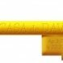

Diante do Trono
mais acessadas
- Canção do Apocalipse violãoguitarraGuitarPropartiturasbaixocavacotecladobateriagaita
- A Ele a Glória violãoguitarraGuitarPropartiturasbaixocavacotecladobateriagaita
- Me Ama (How He Loves) violãoguitarraGuitarPropartiturasbaixocavacotecladobateriagaita
- Te agradeço violãoguitarraGuitarPropartiturasbaixocavacotecladobateriagaita
- Preciso de Ti violãoguitarraGuitarPropartiturasbaixocavacotecladobateriagaita
- Porque Dele Por Ele violãoguitarraGuitarPropartiturasbaixocavacotecladobateriagaita
- Aclame Ao Senhor violãoguitarraGuitarPropartiturasbaixocavacotecladobateriagaita
- Coração igual ao teu violãoguitarraGuitarPropartiturasbaixocavacotecladobateriagaita
- Águas Purificadoras violãoguitarraGuitarPropartiturasbaixocavacotecladobateriagaita
- Aos Olhos do Pai violãoguitarraGuitarPropartiturasbaixocavacotecladobateriagaita
todas as músicas
- #
- 139 violãoguitarraGuitarPropartiturasbaixocavacotecladobateriagaita
- A
- A Batalha É do Senhor 2 violãoguitarraGuitarPropartiturasbaixocavacotecladobateriagaita
- A Batalha é do Senhor violãoguitarraGuitarPropartiturasbaixocavacotecladobateriagaita
- A Biblia violãoguitarraGuitarPropartiturasbaixocavacotecladobateriagaita
- A Canção do Amor violãoguitarraGuitarPropartiturasbaixocavacotecladobateriagaita
- A Ele a Glória violãoguitarraGuitarPropartiturasbaixocavacotecladobateriagaita
- À Sombra do Altíssimo violãoguitarraGuitarPropartiturasbaixocavacotecladobateriagaita
- À Sombra do Altíssimo (diante do Trono 17) violãoguitarraGuitarPropartiturasbaixocavacotecladobateriagaita
- A Ti a Honra violãoguitarraGuitarPropartiturasbaixocavacotecladobateriagaita
- A Tua Vontade violãoguitarraGuitarPropartiturasbaixocavacotecladobateriagaita
- A Vitória da Cruz violãoguitarraGuitarPropartiturasbaixocavacotecladobateriagaita
- A Vitória da Cruz Mais Que Vencedor violãoguitarraGuitarPropartiturasbaixocavacotecladobateriagaita
- A cada manhã violãoguitarraGuitarPropartiturasbaixocavacotecladobateriagaita
- A quem temerei violãoguitarraGuitarPropartiturasbaixocavacotecladobateriagaita
- ADORAMOS O CORDEIRO violãoguitarraGuitarPropartiturasbaixocavacotecladobateriagaita
- Aclamação violãoguitarraGuitarPropartiturasbaixocavacotecladobateriagaita
- Aclame Ao Senhor violãoguitarraGuitarPropartiturasbaixocavacotecladobateriagaita
- Adoramos ao Cordeiro violãoguitarraGuitarPropartiturasbaixocavacotecladobateriagaita
- Adore o Grande Eu Sou violãoguitarraGuitarPropartiturasbaixocavacotecladobateriagaita
- Agora Eu Vejo violãoguitarraGuitarPropartiturasbaixocavacotecladobateriagaita
- Águas Purificadoras violãoguitarraGuitarPropartiturasbaixocavacotecladobateriagaita
- Águas Purificadoras (versão Tu Reinas) violãoguitarraGuitarPropartiturasbaixocavacotecladobateriagaita
- Águas Purificadoras DT 16 violãoguitarraGuitarPropartiturasbaixocavacotecladobateriagaita
- Ainda Existe Uma Cruz violãoguitarraGuitarPropartiturasbaixocavacotecladobateriagaita
- Alegria violãoguitarraGuitarPropartiturasbaixocavacotecladobateriagaita
- Aleluia violãoguitarraGuitarPropartiturasbaixocavacotecladobateriagaita
- Aleluia de Handel violãoguitarraGuitarPropartiturasbaixocavacotecladobateriagaita
- Amado Salvador violãoguitarraGuitarPropartiturasbaixocavacotecladobateriagaita
- Amigo violãoguitarraGuitarPropartiturasbaixocavacotecladobateriagaita
- Amigo fiel violãoguitarraGuitarPropartiturasbaixocavacotecladobateriagaita
- Anseio violãoguitarraGuitarPropartiturasbaixocavacotecladobateriagaita
- Anseio (My Soul Longs) violãoguitarraGuitarPropartiturasbaixocavacotecladobateriagaita
- Anseio Por Mais de Ti violãoguitarraGuitarPropartiturasbaixocavacotecladobateriagaita
- Aos Olhos do Pai violãoguitarraGuitarPropartiturasbaixocavacotecladobateriagaita
- Autor da Vida violãoguitarraGuitarPropartiturasbaixocavacotecladobateriagaita
- B
- Balsamo de Gileade violãoguitarraGuitarPropartiturasbaixocavacotecladobateriagaita
- Baruch Habah violãoguitarraGuitarPropartiturasbaixocavacotecladobateriagaita
- Bençãos Que Nem Sei Contar violãoguitarraGuitarPropartiturasbaixocavacotecladobateriagaita
- Brasil violãoguitarraGuitarPropartiturasbaixocavacotecladobateriagaita
- Brasil (Tu Reinas) violãoguitarraGuitarPropartiturasbaixocavacotecladobateriagaita
- C
- Canção do Apocalipse violãoguitarraGuitarPropartiturasbaixocavacotecladobateriagaita
- Canta Minh'alma violãoguitarraGuitarPropartiturasbaixocavacotecladobateriagaita
- Casa de Oração violãoguitarraGuitarPropartiturasbaixocavacotecladobateriagaita
- Cheiro das Águas violãoguitarraGuitarPropartiturasbaixocavacotecladobateriagaita
- Com Intensidade violãoguitarraGuitarPropartiturasbaixocavacotecladobateriagaita
- Com Júbilo Eu Canto violãoguitarraGuitarPropartiturasbaixocavacotecladobateriagaita
- Como Incenso violãoguitarraGuitarPropartiturasbaixocavacotecladobateriagaita
- Compaixão Que Faz Milagres violãoguitarraGuitarPropartiturasbaixocavacotecladobateriagaita
- Confio Em Teu Amor violãoguitarraGuitarPropartiturasbaixocavacotecladobateriagaita
- Conhecerei violãoguitarraGuitarPropartiturasbaixocavacotecladobateriagaita
- Coração Igual Ao Teu (versão Tu Reinas) violãoguitarraGuitarPropartiturasbaixocavacotecladobateriagaita
- Coração Todo Teu violãoguitarraGuitarPropartiturasbaixocavacotecladobateriagaita
- Coração igual ao teu violãoguitarraGuitarPropartiturasbaixocavacotecladobateriagaita
- Cordeiro e Leão violãoguitarraGuitarPropartiturasbaixocavacotecladobateriagaita
- Corpo de Cristo violãoguitarraGuitarPropartiturasbaixocavacotecladobateriagaita
- Corpo do Cristo violãoguitarraGuitarPropartiturasbaixocavacotecladobateriagaita
- Corpo e Família violãoguitarraGuitarPropartiturasbaixocavacotecladobateriagaita
- Creio violãoguitarraGuitarPropartiturasbaixocavacotecladobateriagaita
- Creio na promessa violãoguitarraGuitarPropartiturasbaixocavacotecladobateriagaita
- D
- De Onde Vem o Meu Socorro violãoguitarraGuitarPropartiturasbaixocavacotecladobateriagaita
- De Todo Coração violãoguitarraGuitarPropartiturasbaixocavacotecladobateriagaita
- Debaixo Dos Nossos Pes violãoguitarraGuitarPropartiturasbaixocavacotecladobateriagaita
- Descanso violãoguitarraGuitarPropartiturasbaixocavacotecladobateriagaita
- Desperta violãoguitarraGuitarPropartiturasbaixocavacotecladobateriagaita
- Deus Está Perto de Nós violãoguitarraGuitarPropartiturasbaixocavacotecladobateriagaita
- Deus Fiel violãoguitarraGuitarPropartiturasbaixocavacotecladobateriagaita
- Deus Fiel (Minha Vida Em Ti) violãoguitarraGuitarPropartiturasbaixocavacotecladobateriagaita
- Deus Reina violãoguitarraGuitarPropartiturasbaixocavacotecladobateriagaita
- Deus de Amor violãoguitarraGuitarPropartiturasbaixocavacotecladobateriagaita
- Deus de Amor (renovo) violãoguitarraGuitarPropartiturasbaixocavacotecladobateriagaita
- Deus de Israel violãoguitarraGuitarPropartiturasbaixocavacotecladobateriagaita
- Deus de Milagres violãoguitarraGuitarPropartiturasbaixocavacotecladobateriagaita
- Deus do Recomeço violãoguitarraGuitarPropartiturasbaixocavacotecladobateriagaita
- Deuteronômio 11 violãoguitarraGuitarPropartiturasbaixocavacotecladobateriagaita
- Diante do Trono violãoguitarraGuitarPropartiturasbaixocavacotecladobateriagaita
- Digno É o Cordeiro violãoguitarraGuitarPropartiturasbaixocavacotecladobateriagaita
- Digno de Adoração violãoguitarraGuitarPropartiturasbaixocavacotecladobateriagaita
- Dono do Meu Coração violãoguitarraGuitarPropartiturasbaixocavacotecladobateriagaita
- E
- É Tempo violãoguitarraGuitarPropartiturasbaixocavacotecladobateriagaita
- E Você? violãoguitarraGuitarPropartiturasbaixocavacotecladobateriagaita
- Eis-me Aqui violãoguitarraGuitarPropartiturasbaixocavacotecladobateriagaita
- Em Adoração violãoguitarraGuitarPropartiturasbaixocavacotecladobateriagaita
- Em Cristo Jesus violãoguitarraGuitarPropartiturasbaixocavacotecladobateriagaita
- Em Meio a Tua Glória violãoguitarraGuitarPropartiturasbaixocavacotecladobateriagaita
- Em Tua Presença violãoguitarraGuitarPropartiturasbaixocavacotecladobateriagaita
- Em Tua Presença (when I'm With You) violãoguitarraGuitarPropartiturasbaixocavacotecladobateriagaita
- Em teus átrios violãoguitarraGuitarPropartiturasbaixocavacotecladobateriagaita
- Em toda terra violãoguitarraGuitarPropartiturasbaixocavacotecladobateriagaita
- Enquanto Eu Viver violãoguitarraGuitarPropartiturasbaixocavacotecladobateriagaita
- Ensina-me violãoguitarraGuitarPropartiturasbaixocavacotecladobateriagaita
- És Mais Forte violãoguitarraGuitarPropartiturasbaixocavacotecladobateriagaita
- És o Deus Que Me Ama violãoguitarraGuitarPropartiturasbaixocavacotecladobateriagaita
- És o Deus Que Me Cura violãoguitarraGuitarPropartiturasbaixocavacotecladobateriagaita
- Esconde-esconde violãoguitarraGuitarPropartiturasbaixocavacotecladobateriagaita
- Escudo e Proteção violãoguitarraGuitarPropartiturasbaixocavacotecladobateriagaita
- Esperança violãoguitarraGuitarPropartiturasbaixocavacotecladobateriagaita
- Espírito Santo violãoguitarraGuitarPropartiturasbaixocavacotecladobateriagaita
- Espírito de Vida violãoguitarraGuitarPropartiturasbaixocavacotecladobateriagaita
- Espontaneo Porque Te Amo violãoguitarraGuitarPropartiturasbaixocavacotecladobateriagaita
- Esse É o Nosso Deus violãoguitarraGuitarPropartiturasbaixocavacotecladobateriagaita
- Estás Comigo violãoguitarraGuitarPropartiturasbaixocavacotecladobateriagaita
- Este É o Dia violãoguitarraGuitarPropartiturasbaixocavacotecladobateriagaita
- Este reino violãoguitarraGuitarPropartiturasbaixocavacotecladobateriagaita
- Eterno Amor violãoguitarraGuitarPropartiturasbaixocavacotecladobateriagaita
- Eu Canto (My Heart Sings Worthy) violãoguitarraGuitarPropartiturasbaixocavacotecladobateriagaita
- Eu Quero Avivamento violãoguitarraGuitarPropartiturasbaixocavacotecladobateriagaita
- Eu Sou DT17 violãoguitarraGuitarPropartiturasbaixocavacotecladobateriagaita
- Eu jamais serei violãoguitarraGuitarPropartiturasbaixocavacotecladobateriagaita
- Eu nasci de novo violãoguitarraGuitarPropartiturasbaixocavacotecladobateriagaita
- Eu sou do meu Amado violãoguitarraGuitarPropartiturasbaixocavacotecladobateriagaita
- Exaltado violãoguitarraGuitarPropartiturasbaixocavacotecladobateriagaita
- Exaltado (versão Tu Reinas) violãoguitarraGuitarPropartiturasbaixocavacotecladobateriagaita
- Exaltado em Santidade violãoguitarraGuitarPropartiturasbaixocavacotecladobateriagaita
- F
- Família Bendita do Senhor violãoguitarraGuitarPropartiturasbaixocavacotecladobateriagaita
- Faz-Nos Um violãoguitarraGuitarPropartiturasbaixocavacotecladobateriagaita
- Festa violãoguitarraGuitarPropartiturasbaixocavacotecladobateriagaita
- Foi o Sangue violãoguitarraGuitarPropartiturasbaixocavacotecladobateriagaita
- G
- Gente como nós violãoguitarraGuitarPropartiturasbaixocavacotecladobateriagaita
- Glória violãoguitarraGuitarPropartiturasbaixocavacotecladobateriagaita
- Glória a Deus violãoguitarraGuitarPropartiturasbaixocavacotecladobateriagaita
- Grande violãoguitarraGuitarPropartiturasbaixocavacotecladobateriagaita
- Grande (great, Great God) violãoguitarraGuitarPropartiturasbaixocavacotecladobateriagaita
- Grande Deus violãoguitarraGuitarPropartiturasbaixocavacotecladobateriagaita
- H
- Há Alegria violãoguitarraGuitarPropartiturasbaixocavacotecladobateriagaita
- Há Alegria / Com Alegria Cantai violãoguitarraGuitarPropartiturasbaixocavacotecladobateriagaita
- Hosana violãoguitarraGuitarPropartiturasbaixocavacotecladobateriagaita
- I
- Insaciável violãoguitarraGuitarPropartiturasbaixocavacotecladobateriagaita
- Invoca-me violãoguitarraGuitarPropartiturasbaixocavacotecladobateriagaita
- Invocarei violãoguitarraGuitarPropartiturasbaixocavacotecladobateriagaita
- Invoco o Senhor violãoguitarraGuitarPropartiturasbaixocavacotecladobateriagaita
- Isaías 40 violãoguitarraGuitarPropartiturasbaixocavacotecladobateriagaita
- Isaías 53 violãoguitarraGuitarPropartiturasbaixocavacotecladobateriagaita
- J
- Já Não Há violãoguitarraGuitarPropartiturasbaixocavacotecladobateriagaita
- Jesus Amado violãoguitarraGuitarPropartiturasbaixocavacotecladobateriagaita
- Jesus, Jesus violãoguitarraGuitarPropartiturasbaixocavacotecladobateriagaita
- Jesus, és o meu amado violãoguitarraGuitarPropartiturasbaixocavacotecladobateriagaita
- L
- Leva-me violãoguitarraGuitarPropartiturasbaixocavacotecladobateriagaita
- Lindo violãoguitarraGuitarPropartiturasbaixocavacotecladobateriagaita
- Livre Sou violãoguitarraGuitarPropartiturasbaixocavacotecladobateriagaita
- Louvem violãoguitarraGuitarPropartiturasbaixocavacotecladobateriagaita
- Lugares altos violãoguitarraGuitarPropartiturasbaixocavacotecladobateriagaita
- M
- Mais Eu Te Busco violãoguitarraGuitarPropartiturasbaixocavacotecladobateriagaita
- Mais Que Vencedor violãoguitarraGuitarPropartiturasbaixocavacotecladobateriagaita
- Mais Que Vencedor violãoguitarraGuitarPropartiturasbaixocavacotecladobateriagaita
- Mais do Que Todo violãoguitarraGuitarPropartiturasbaixocavacotecladobateriagaita
- Mais que Tudo violãoguitarraGuitarPropartiturasbaixocavacotecladobateriagaita
- Manancial violãoguitarraGuitarPropartiturasbaixocavacotecladobateriagaita
- Manancial DT16 violãoguitarraGuitarPropartiturasbaixocavacotecladobateriagaita
- Manancial Remix Dt6 violãoguitarraGuitarPropartiturasbaixocavacotecladobateriagaita
- Maranata violãoguitarraGuitarPropartiturasbaixocavacotecladobateriagaita
- Maravilhado violãoguitarraGuitarPropartiturasbaixocavacotecladobateriagaita
- Marca da Promessa violãoguitarraGuitarPropartiturasbaixocavacotecladobateriagaita
- Me Ama violãoguitarraGuitarPropartiturasbaixocavacotecladobateriagaita
- Me Ama (How He Loves) violãoguitarraGuitarPropartiturasbaixocavacotecladobateriagaita
- Me Refaz violãoguitarraGuitarPropartiturasbaixocavacotecladobateriagaita
- Me Rendo violãoguitarraGuitarPropartiturasbaixocavacotecladobateriagaita
- Me libertou violãoguitarraGuitarPropartiturasbaixocavacotecladobateriagaita
- Medley Cura violãoguitarraGuitarPropartiturasbaixocavacotecladobateriagaita
- Medley Pentecostal violãoguitarraGuitarPropartiturasbaixocavacotecladobateriagaita
- Medlley Israel (Abertura Shema, Deus de Israel, Shailailai, Salmo 24) violãoguitarraGuitarPropartiturasbaixocavacotecladobateriagaita
- Meu Coração violãoguitarraGuitarPropartiturasbaixocavacotecladobateriagaita
- Meu Deus Meu Pai violãoguitarraGuitarPropartiturasbaixocavacotecladobateriagaita
- Meu Irmão violãoguitarraGuitarPropartiturasbaixocavacotecladobateriagaita
- Meu Redentor Vive violãoguitarraGuitarPropartiturasbaixocavacotecladobateriagaita
- Meu filho, não temas violãoguitarraGuitarPropartiturasbaixocavacotecladobateriagaita
- Mil Linguas violãoguitarraGuitarPropartiturasbaixocavacotecladobateriagaita
- Minha Herança violãoguitarraGuitarPropartiturasbaixocavacotecladobateriagaita
- Minha Herança DT11 violãoguitarraGuitarPropartiturasbaixocavacotecladobateriagaita
- Mulheres Virtuosas violãoguitarraGuitarPropartiturasbaixocavacotecladobateriagaita
- Musica do Céu violãoguitarraGuitarPropartiturasbaixocavacotecladobateriagaita
- Musica do Ceu violãoguitarraGuitarPropartiturasbaixocavacotecladobateriagaita
- N
- Na Terra Seca violãoguitarraGuitarPropartiturasbaixocavacotecladobateriagaita
- Não Haverá Impossíveis violãoguitarraGuitarPropartiturasbaixocavacotecladobateriagaita
- Não Quero Viver Pra Mim Mesmo violãoguitarraGuitarPropartiturasbaixocavacotecladobateriagaita
- Não Se Esconda de Deus violãoguitarraGuitarPropartiturasbaixocavacotecladobateriagaita
- Não há outro igual violãoguitarraGuitarPropartiturasbaixocavacotecladobateriagaita
- Não olho circunstâncias violãoguitarraGuitarPropartiturasbaixocavacotecladobateriagaita
- Não temas violãoguitarraGuitarPropartiturasbaixocavacotecladobateriagaita
- Nasci de novo violãoguitarraGuitarPropartiturasbaixocavacotecladobateriagaita
- No Teu altar violãoguitarraGuitarPropartiturasbaixocavacotecladobateriagaita
- Noiva Amada violãoguitarraGuitarPropartiturasbaixocavacotecladobateriagaita
- Nos Braços do Pai violãoguitarraGuitarPropartiturasbaixocavacotecladobateriagaita
- Nos Braços do Pai (Renovo) violãoguitarraGuitarPropartiturasbaixocavacotecladobateriagaita
- Nosso Deus É Poderoso (God Is Able) violãoguitarraGuitarPropartiturasbaixocavacotecladobateriagaita
- Nova Doxologia violãoguitarraGuitarPropartiturasbaixocavacotecladobateriagaita
- Novo Dia Novo Tempo violãoguitarraGuitarPropartiturasbaixocavacotecladobateriagaita
- O
- O Ar Que Eu Respiro violãoguitarraGuitarPropartiturasbaixocavacotecladobateriagaita
- O Cheiro das Águas (Tu Reinas) violãoguitarraGuitarPropartiturasbaixocavacotecladobateriagaita
- O Cheiro das águas violãoguitarraGuitarPropartiturasbaixocavacotecladobateriagaita
- Ó Deus! violãoguitarraGuitarPropartiturasbaixocavacotecladobateriagaita
- O Encontro Das Águas violãoguitarraGuitarPropartiturasbaixocavacotecladobateriagaita
- O Espírito e a Noiva dizem Vem violãoguitarraGuitarPropartiturasbaixocavacotecladobateriagaita
- O Louvor A Ti Oferecemos violãoguitarraGuitarPropartiturasbaixocavacotecladobateriagaita
- O Teu Amor violãoguitarraGuitarPropartiturasbaixocavacotecladobateriagaita
- O Vencedor violãoguitarraGuitarPropartiturasbaixocavacotecladobateriagaita
- O amor do nosso Deus violãoguitarraGuitarPropartiturasbaixocavacotecladobateriagaita
- Oásis violãoguitarraGuitarPropartiturasbaixocavacotecladobateriagaita
- Oleiro violãoguitarraGuitarPropartiturasbaixocavacotecladobateriagaita
- Olet Puolellani (porque Estás Comigo) violãoguitarraGuitarPropartiturasbaixocavacotecladobateriagaita
- Onde violãoguitarraGuitarPropartiturasbaixocavacotecladobateriagaita
- Onde Eu Tocar violãoguitarraGuitarPropartiturasbaixocavacotecladobateriagaita
- Ouve Senhor violãoguitarraGuitarPropartiturasbaixocavacotecladobateriagaita
- P
- Pai Nosso (Na Terra como no Céu) violãoguitarraGuitarPropartiturasbaixocavacotecladobateriagaita
- Pai da criação violãoguitarraGuitarPropartiturasbaixocavacotecladobateriagaita
- Pela Graça de Deus violãoguitarraGuitarPropartiturasbaixocavacotecladobateriagaita
- Pela Manhã violãoguitarraGuitarPropartiturasbaixocavacotecladobateriagaita
- Pelo Teu Amor violãoguitarraGuitarPropartiturasbaixocavacotecladobateriagaita
- Pelos Olhos da Fé violãoguitarraGuitarPropartiturasbaixocavacotecladobateriagaita
- Perto de Ti violãoguitarraGuitarPropartiturasbaixocavacotecladobateriagaita
- Perto de nós violãoguitarraGuitarPropartiturasbaixocavacotecladobateriagaita
- Poder do Teu Amor violãoguitarraGuitarPropartiturasbaixocavacotecladobateriagaita
- Por Ti Eu Existo violãoguitarraGuitarPropartiturasbaixocavacotecladobateriagaita
- Por Tudo Que Tu És violãoguitarraGuitarPropartiturasbaixocavacotecladobateriagaita
- Por amor de tí, oh Brasil violãoguitarraGuitarPropartiturasbaixocavacotecladobateriagaita
- Porque Dele Por Ele violãoguitarraGuitarPropartiturasbaixocavacotecladobateriagaita
- Porque Estás Comigo violãoguitarraGuitarPropartiturasbaixocavacotecladobateriagaita
- Porque Te Amo violãoguitarraGuitarPropartiturasbaixocavacotecladobateriagaita
- Pra Sempre Reinarás violãoguitarraGuitarPropartiturasbaixocavacotecladobateriagaita
- Preciso de Ti violãoguitarraGuitarPropartiturasbaixocavacotecladobateriagaita
- Príncipe da Paz violãoguitarraGuitarPropartiturasbaixocavacotecladobateriagaita
- Príncipe da Paz violãoguitarraGuitarPropartiturasbaixocavacotecladobateriagaita
- Q
- Quando Chamo o Teu Nome violãoguitarraGuitarPropartiturasbaixocavacotecladobateriagaita
- Quando Deus escolhe alguém violãoguitarraGuitarPropartiturasbaixocavacotecladobateriagaita
- Quando Nasce Uma Criança violãoguitarraGuitarPropartiturasbaixocavacotecladobateriagaita
- Quando a tempestade vem violãoguitarraGuitarPropartiturasbaixocavacotecladobateriagaita
- Quão Grande És Tú violãoguitarraGuitarPropartiturasbaixocavacotecladobateriagaita
- Quão granda és tu violãoguitarraGuitarPropartiturasbaixocavacotecladobateriagaita
- Que a paz de Deus reine violãoguitarraGuitarPropartiturasbaixocavacotecladobateriagaita
- Quem Nos Separará? violãoguitarraGuitarPropartiturasbaixocavacotecladobateriagaita
- Quem é deus como nosso Deus? violãoguitarraGuitarPropartiturasbaixocavacotecladobateriagaita
- Quero Celebrar violãoguitarraGuitarPropartiturasbaixocavacotecladobateriagaita
- Quero Seguir-te violãoguitarraGuitarPropartiturasbaixocavacotecladobateriagaita
- Quero Subir violãoguitarraGuitarPropartiturasbaixocavacotecladobateriagaita
- Quero Tocar-te violãoguitarraGuitarPropartiturasbaixocavacotecladobateriagaita
- Quero me apaixonar violãoguitarraGuitarPropartiturasbaixocavacotecladobateriagaita
- Quero ser livre violãoguitarraGuitarPropartiturasbaixocavacotecladobateriagaita
- R
- Rap da Família violãoguitarraGuitarPropartiturasbaixocavacotecladobateriagaita
- Rasgue Os Ceus violãoguitarraGuitarPropartiturasbaixocavacotecladobateriagaita
- Rei Dos Reis violãoguitarraGuitarPropartiturasbaixocavacotecladobateriagaita
- Rei Dos Reis/Cordeiro e Leão (tu Reinas) violãoguitarraGuitarPropartiturasbaixocavacotecladobateriagaita
- Rei da Glória violãoguitarraGuitarPropartiturasbaixocavacotecladobateriagaita
- Ressuscitou violãoguitarraGuitarPropartiturasbaixocavacotecladobateriagaita
- S
- SEU NOME violãoguitarraGuitarPropartiturasbaixocavacotecladobateriagaita
- SEU NOME violãoguitarraGuitarPropartiturasbaixocavacotecladobateriagaita
- Salmo 90 violãoguitarraGuitarPropartiturasbaixocavacotecladobateriagaita
- Salmo 91 (Diante do Trono 17) violãoguitarraGuitarPropartiturasbaixocavacotecladobateriagaita
- Santo violãoguitarraGuitarPropartiturasbaixocavacotecladobateriagaita
- Santo , Santo , Santo violãoguitarraGuitarPropartiturasbaixocavacotecladobateriagaita
- Santo Como Tu És violãoguitarraGuitarPropartiturasbaixocavacotecladobateriagaita
- Santo Deus violãoguitarraGuitarPropartiturasbaixocavacotecladobateriagaita
- Saudades violãoguitarraGuitarPropartiturasbaixocavacotecladobateriagaita
- Se Renovam violãoguitarraGuitarPropartiturasbaixocavacotecladobateriagaita
- Seja o centro violãoguitarraGuitarPropartiturasbaixocavacotecladobateriagaita
- Senhor Dos Exércitos, Rei violãoguitarraGuitarPropartiturasbaixocavacotecladobateriagaita
- Senhor do Exercitos, Rei violãoguitarraGuitarPropartiturasbaixocavacotecladobateriagaita
- Senhor dos Exércitos Rei violãoguitarraGuitarPropartiturasbaixocavacotecladobateriagaita
- Shalom Jerusalém violãoguitarraGuitarPropartiturasbaixocavacotecladobateriagaita
- Shemar Israel violãoguitarraGuitarPropartiturasbaixocavacotecladobateriagaita
- Só A Ti violãoguitarraGuitarPropartiturasbaixocavacotecladobateriagaita
- Só Jesus violãoguitarraGuitarPropartiturasbaixocavacotecladobateriagaita
- Só Um Relance violãoguitarraGuitarPropartiturasbaixocavacotecladobateriagaita
- Só a Ti violãoguitarraGuitarPropartiturasbaixocavacotecladobateriagaita
- Só em ti violãoguitarraGuitarPropartiturasbaixocavacotecladobateriagaita
- Só o Senhor É Deus violãoguitarraGuitarPropartiturasbaixocavacotecladobateriagaita
- Sobre as Águas violãoguitarraGuitarPropartiturasbaixocavacotecladobateriagaita
- Sol da Justiça violãoguitarraGuitarPropartiturasbaixocavacotecladobateriagaita
- Sou Vencedor violãoguitarraGuitarPropartiturasbaixocavacotecladobateriagaita
- Surpreendido violãoguitarraGuitarPropartiturasbaixocavacotecladobateriagaita
- T
- Tanto sofrer violãoguitarraGuitarPropartiturasbaixocavacotecladobateriagaita
- Te Adoro, Meu Rei violãoguitarraGuitarPropartiturasbaixocavacotecladobateriagaita
- Te Adoro, Meu Rei violãoguitarraGuitarPropartiturasbaixocavacotecladobateriagaita
- Te Entronizamos violãoguitarraGuitarPropartiturasbaixocavacotecladobateriagaita
- Te Exaltamos, Pai violãoguitarraGuitarPropartiturasbaixocavacotecladobateriagaita
- Te agradeço violãoguitarraGuitarPropartiturasbaixocavacotecladobateriagaita
- Tem todo poder violãoguitarraGuitarPropartiturasbaixocavacotecladobateriagaita
- Tempo de Festa violãoguitarraGuitarPropartiturasbaixocavacotecladobateriagaita
- Tempo de Restituição violãoguitarraGuitarPropartiturasbaixocavacotecladobateriagaita
- Tetelestai violãoguitarraGuitarPropartiturasbaixocavacotecladobateriagaita
- Teu Domínio Não Terá Fim violãoguitarraGuitarPropartiturasbaixocavacotecladobateriagaita
- Toda Terra violãoguitarraGuitarPropartiturasbaixocavacotecladobateriagaita
- Toda Terra ( The Whole Earth ) violãoguitarraGuitarPropartiturasbaixocavacotecladobateriagaita
- Toda a Terra violãoguitarraGuitarPropartiturasbaixocavacotecladobateriagaita
- Toma o Teu Lugar violãoguitarraGuitarPropartiturasbaixocavacotecladobateriagaita
- Toque minhas mãos violãoguitarraGuitarPropartiturasbaixocavacotecladobateriagaita
- Tu És (You) violãoguitarraGuitarPropartiturasbaixocavacotecladobateriagaita
- Tu És Bom violãoguitarraGuitarPropartiturasbaixocavacotecladobateriagaita
- Tu És Rei violãoguitarraGuitarPropartiturasbaixocavacotecladobateriagaita
- Tú És Tremendo violãoguitarraGuitarPropartiturasbaixocavacotecladobateriagaita
- Tu És a Minha Coroa violãoguitarraGuitarPropartiturasbaixocavacotecladobateriagaita
- Tu És o Motivo violãoguitarraGuitarPropartiturasbaixocavacotecladobateriagaita
- Tu És o Remédio violãoguitarraGuitarPropartiturasbaixocavacotecladobateriagaita
- Tu Reinas violãoguitarraGuitarPropartiturasbaixocavacotecladobateriagaita
- Tu Reinas (Versão 2014) violãoguitarraGuitarPropartiturasbaixocavacotecladobateriagaita
- Tu Reinas Simplificada violãoguitarraGuitarPropartiturasbaixocavacotecladobateriagaita
- Tu, Tu és Deus violãoguitarraGuitarPropartiturasbaixocavacotecladobateriagaita
- Tua Chuva violãoguitarraGuitarPropartiturasbaixocavacotecladobateriagaita
- Tua Glória violãoguitarraGuitarPropartiturasbaixocavacotecladobateriagaita
- Tua Paz violãoguitarraGuitarPropartiturasbaixocavacotecladobateriagaita
- Tua Visão violãoguitarraGuitarPropartiturasbaixocavacotecladobateriagaita
- Tua presença violãoguitarraGuitarPropartiturasbaixocavacotecladobateriagaita
- Tudo Para Mim violãoguitarraGuitarPropartiturasbaixocavacotecladobateriagaita
- Tudo Por Ti (Go) violãoguitarraGuitarPropartiturasbaixocavacotecladobateriagaita
- Tudo Vem de Ti violãoguitarraGuitarPropartiturasbaixocavacotecladobateriagaita
- U
- Um violãoguitarraGuitarPropartiturasbaixocavacotecladobateriagaita
- Uma Gota violãoguitarraGuitarPropartiturasbaixocavacotecladobateriagaita
- Usa-Me violãoguitarraGuitarPropartiturasbaixocavacotecladobateriagaita
- V
- Vaso de Alabastro violãoguitarraGuitarPropartiturasbaixocavacotecladobateriagaita
- Vem violãoguitarraGuitarPropartiturasbaixocavacotecladobateriagaita
- Vem Filho Amado violãoguitarraGuitarPropartiturasbaixocavacotecladobateriagaita
- Vem Ó Fonte violãoguitarraGuitarPropartiturasbaixocavacotecladobateriagaita
- Vem de Ti Senhor violãoguitarraGuitarPropartiturasbaixocavacotecladobateriagaita
- Vestes de Louvor violãoguitarraGuitarPropartiturasbaixocavacotecladobateriagaita
- Vestes de Louvor / Isaías 40 - Medley violãoguitarraGuitarPropartiturasbaixocavacotecladobateriagaita
- Vinho Novo violãoguitarraGuitarPropartiturasbaixocavacotecladobateriagaita
- Vive o Senhor violãoguitarraGuitarPropartiturasbaixocavacotecladobateriagaita
- Vivo Em Nós violãoguitarraGuitarPropartiturasbaixocavacotecladobateriagaita
- Vou Prosseguir violãoguitarraGuitarPropartiturasbaixocavacotecladobateriagaita
- Vou Vencer violãoguitarraGuitarPropartiturasbaixocavacotecladobateriagaita
Notícias relacionadas
- Ana Paula Valadão anuncia que vai deixar as redes sociais há 2 meses
- Conheça os vencedores da segunda edição do Troféu Promessas dez/12
- Saiba quem são os finalistas do Troféu Promessas 2012 out/12
- Trófeu Promessas premia nomes da música gospel brasileira set/12
artistas relacionados
 Igreja Batista da Lagoinha
Igreja Batista da Lagoinha André Valadão
André Valadão- Nívea Soares
- Fernanda Brum
 Mariana Valadão
Mariana Valadão- Aline Barros
 Renascer Praise
Renascer Praise- Eyshila
- Ana Paula Valadão
 Fernandinho
Fernandinho- Cassiane
- Gateway Worship
 Ana Nóbrega
Ana Nóbrega Livres Para Adorar
Livres Para Adorar- Gabriela Rocha
- Anderson Freire
 Paulo César Baruk
Paulo César Baruk- Ludmila Ferber
- Daniela Araújo
 Davi Sacer
Davi Sacer- Heloísa Rosa
 Ministerio Trazendo a Arca
Ministerio Trazendo a Arca Clamor pelas Nações
Clamor pelas Nações Kleber Lucas
Kleber Lucas- David Quinlan
- Leonardo Gonçalves
- Damares
 Toque No Altar
Toque No Altar- Trazendo a Arca
 Soraya Moraes
Soraya Moraes PG
PG- Hillsong Live
- Thalles Roberto
- Adoração e Adoradores
 Quatro Por Um
Quatro Por Um Santa Geração
Santa Geração- Casa de Davi
- Bruna Karla
 Fruto Sagrado
Fruto Sagrado- Filhos do Homem
- Cristina Mel
- Lucas Souza
 CTMDT
CTMDT- Voz da Verdade
 Crianças Diante do Trono
Crianças Diante do Trono- Jotta A
- Rose Nascimento
 Palavrantiga
Palavrantiga- João Alexandre
- Oficina G3
- Ministério Apascentar de Nova Iguaçu
- Khorus
Comentários 54
- Shamar: Em 03/04/2016 10:57
Graça e Paz da parte do Eterno, Amados se for possível gostaria da cifra da canção "Na Terra como no Céu" desde já muito obrigado.
- Rafa: Em 01/03/2016 19:47
quero as cifras da música "quero subir" do CD "Renovo" do Diante do Trono. eu não axei aki....
- Ale: Em 11/08/2015 17:51
Alguem pode me falar como é o solo do início e do meio da música????
- Ale: Em 11/08/2015 17:52
Da musica Tu Reinas (versão 2014)
- Ale: Em 11/08/2015 17:52
- Letícia: Em 11/02/2015 18:56
Diante do Trono; mestres em copiar as músicas dos Americanos rs.
- Thuane: Em 24/12/2014 16:50
#VídeoAula
- Leonardo: Em 09/09/2014 17:58
Diante do trono,, muito top =D
- Vini: Em 24/05/2014 13:42
Ta faltando a "Seu Nome é Yeshua"
E... cadê as vídeoaulas? #VideoAulaDT - Isabella: Em 06/03/2014 16:17
Enquanto Eu Viver :D
- renan.maia.750: Em 21/02/2013 10:02
me ama solo , muito massa

 studiovanderleytigre
studiovanderleytigre  Davina Maria Candido
Davina Maria Candido  Jose
Jose  Syllvia
Syllvia 
 Leonardo
Leonardo  Vitoria
Vitoria  Thalmay
Thalmay  Luydi
Luydi